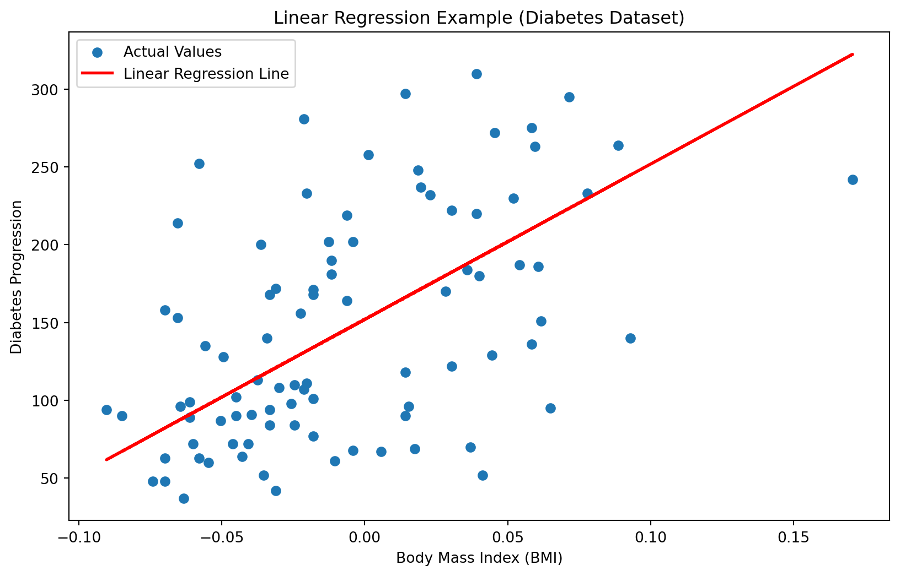

Machine learning is a branch of artificial intelligence that focuses on creating algorithms and statistical models for making predictions using data.
The fundamental procedure involves the extensive training of a model using a well-defined dataset, where the model learns intricate patterns and relationships within the provided information. This training phase is crucial, as it equips the model with the ability to generalize its acquired knowledge and apply it to new, unseen data, thereby facilitating accurate predictions.
There are different types of ways these computer models can learn. In one method called supervised learning, the computer learns from examples where we already know the answers. In another method called unsupervised learning, it figures out patterns and relationships from data without having specific answers given to it. There’s also semi-supervised learning, which is a mix of both, and reinforcement learning, where the computer learns by trying things out and getting feedback.
So, machine learning is like giving computers the ability to learn from experience and data to make smart predictions.
Machine Learning Applications:
Machine learning plays an important role in various industries including, healthcare, engineering finance etc.
Examples of machine learning applications are given below,
Fraud detection: Employing machine learning algorithms aids in identifying fraudulent transactions through the analysis of patterns within transaction data.
Image classification: Machine learning algorithms can be specifically trained to categorize images based on their content, performing tasks like recognizing objects or individuals in photos.
Predictive maintenance: Leveraging machine learning algorithms enables the prediction of equipment failures, facilitating proactive maintenance and minimizing downtime.
Recommender systems: Machine learning algorithms excel in suggesting products or services based on a user’s past interactions with a system, enhancing user experience and engagement.
Classification of Machine Learning
ML is generally classified into three main categories.
1. Supervised Learning
Supervised learning is like teaching a computer to predict things. For instance, you can use it to guess a house’s price based on its size, location, and other details.Supervised learning is like teaching a computer to predict things. For instance, you can use it to guess a house’s price based on its size, location, and other details.
Examples:
Linear Regression involves forecasting a house’s price by considering its square footage.
Logistic Regression is employed to predict the likelihood of an event, like whether a customer will make a purchase.
Decision Trees are used to estimate the probability of loan applicants defaulting based on their financial history.
Random Forest is applied to predict the species of an iris plant based on its physical characteristics.
Naive Bayes is utilized to determine the sentiment of a movie review, classifying it as positive, negative, or neutral.
Example with code for Supervised Learning (Linear Regression)
Code
import numpy as npimport matplotlib.pyplot as pltfrom sklearn.datasets import load_diabetesfrom sklearn.model_selection import train_test_splitfrom sklearn.linear_model import LinearRegressionfrom sklearn.metrics import mean_squared_error# Load the Diabetes datasetdiabetes = load_diabetes()data = diabetes.datatarget = diabetes.target# Select a single feature (let's use BMI - body mass index)X = data[:, np.newaxis, 2]# Split the data into training and testing setsX_train, X_test, y_train, y_test = train_test_split(X, target, test_size=0.2, random_state=42)# Initialize and train the linear regression modelmodel = LinearRegression()model.fit(X_train, y_train)# Make predictions on the test sety_pred = model.predict(X_test)# Calculate Mean Squared Errormse = mean_squared_error(y_test, y_pred)print(f'Mean Squared Error: {mse}')# Visualize the linear regression lineplt.figure(figsize=(10, 6))plt.scatter(X_test.flatten(), y_test, label='Actual Values')plt.plot(X_test.flatten(), y_pred, color='red', linewidth=2, label='Linear Regression Line')plt.title('Linear Regression Example (Diabetes Dataset)')plt.xlabel('Body Mass Index (BMI)')plt.ylabel('Diabetes Progression')plt.legend()plt.show()
Mean Squared Error: 4061.8259284949268

2. Unsupervised Learning
Unsupervised learning is a part of machine learning that uncovers patterns in data without knowing the outcomes beforehand. For instance, think of it like sorting customers based on how they spend money. Using algorithms, it identifies similarities in spending habits, creating groups of customers with similar behaviors. This helps businesses understand their customers better and tailor strategies accordingly.
Examples:
K-Means Clustering involves organizing customers into groups according to their spending habits.
Principal Component Analysis (PCA) reduces data complexity while preserving crucial information.
Hierarchical Clustering divides a market into distinct customer segments based on purchasing behaviors.
Association Rule Mining identifies connections between items in transaction data, like items in a grocery purchase.
Now, let’s explore Unsupervised Learning through an example of Hierarchical Clustering.
Code
import numpy as npimport matplotlib.pyplot as pltimport seaborn as snsfrom sklearn.datasets import load_irisfrom scipy.cluster.hierarchy import dendrogram, linkagefrom sklearn.preprocessing import StandardScaler# Load the Iris datasetiris = load_iris()data = iris.datatarget = iris.target# Standardize the features for better clustering resultsscaler = StandardScaler()data_scaled = scaler.fit_transform(data)# Perform hierarchical clusteringlinked = linkage(data_scaled, 'ward') # Using 'ward' method for linkage# Visualize the dendrogram with improved x-label orientationplt.figure(figsize=(12, 8))dendrogram(linked, orientation='top', distance_sort='descending', show_leaf_counts=True, labels=iris.target_names[target], leaf_rotation=45.)plt.title('Hierarchical Clustering Dendrogram (Iris Dataset)')plt.xlabel('Species')plt.ylabel('Cluster Distance')plt.show()
3. Reinforcement Learning
Reinforcement learning falls under the category of machine learning, where the algorithm learns through practical experience. The algorithm is provided with feedback in the form of rewards or penalties based on its actions, utilizing this information to enhance its performance progressively. For example, one could employ a reinforcement learning algorithm to guide a robot in mastering the navigation through a maze.
Examples:
Game Playing — Instructing an agent to engage in chess or Go, rewarding commendable moves and penalizing undesirable ones.
Robotics — Guiding a robot to traverse an environment and execute assigned tasks.
Stock Trading — Equipping an agent to formulate investment choices grounded in stock market data.
Autonomous Driving — Empowering an agent to make determinations on steering, acceleration, and braking in response to road conditions.
Now, let’s see an example of Reinforcement Learning: Q-Learning.
Code
import numpy as npimport random# Define the statesstates = [0, 1, 2, 3, 4, 5]# Define the actionsactions = [0, 1, 2, 3]# Define the rewardsrewards = np.array([[0, 1, 0, 0], [1, 0, 1, 0], [0, 1, 0, 1], [0, 0, 1, 0], [1, 0, 0, 0], [0, 0, 0, 0]])# Define the Q-TableQ = np.zeros((6, 4))# Define the learning ratelr =0.8# Define the discount factory =0.95# Define the number of episodesepisodes =1000for i inrange(episodes):# Choose a random state state = random.choice(states)while state !=5:# Choose a random action action = random.choice(actions)# Update the Q-Table Q[state, action] = Q[state, action] + lr * (rewards[state, action] + y * np.max(Q[state +1, :]) - Q[state, action]) state = state +1# The final Q-Tableprint(Q)
The code simulates Q-learning, a reinforcement learning algorithm, to update Q-values for different states over multiple episodes. It visualizes the convergence of Q-values towards the true Q-values (computed based on provided rewards and a discount factor) using a simple example with three states. The plot shows the Q-values’ evolution across episodes, indicating the algorithm’s learning process.
gamma and alpha are hyperparameters controlling the discount factor and learning rate, respectively.
n represents the number of states, and r_list contains the rewards associated with each state transition.
The code iteratively updates Q-values based on the Q-learning update rule and visualizes the convergence process in a plot.
Conclusion:
There are some Python tools that make it easy to start doing machine learning. Examples include scikit-learn, TensorFlow, and PyTorch.
These tools come with lots of pre-made programs and features to prepare and look at data. They also have good guides and lessons, which are helpful for beginners.
To be good at machine learning, it’s important to know some stats and math basics. It also helps if you’ve worked with big sets of data before and know some basic computer programming.
One big part of machine learning is checking how good your model is. We use things like accuracy and precision to measure this. It’s important to understand these measures and pick the right one for your job.
Python has lots of tools to make starting with machine learning easy. The field is always changing, with new things coming out. If you’re just starting or have been doing this for a while, there’s always something new to learn in machine learning.
To wrap it up, machine learning is a strong tool for solving different problems, like recognizing pictures or understanding language. It keeps changing, so it’s important to keep up with what’s new in the field.
Source Code
---title: "1\\. Machine Learning Introduction"author: "M Mubashar Ashraf"date: "2023-11-25"categories: [Machine Learing Basics]output: html_documentimage: "ML-Intro.jpg"format: html: code-fold: truejupyter: python3code-fold: truekeep-ipynb: true---## What is Machine Learning?Machine learning is a branch of artificial intelligence that focuses on creating algorithms and statistical models for making predictions using data.- The fundamental procedure involves the extensive training of a model using a well-defined dataset, where the model learns intricate patterns and relationships within the provided information. This training phase is crucial, as it equips the model with the ability to generalize its acquired knowledge and apply it to new, unseen data, thereby facilitating accurate predictions.- There are different types of ways these computer models can learn. In one method called supervised learning, the computer learns from examples where we already know the answers. In another method called unsupervised learning, it figures out patterns and relationships from data without having specific answers given to it. There's also semi-supervised learning, which is a mix of both, and reinforcement learning, where the computer learns by trying things out and getting feedback.- So, machine learning is like giving computers the ability to learn from experience and data to make smart predictions.## Machine Learning Applications:Machine learning plays an important role in various industries including, healthcare, engineering finance etc.Examples of machine learning applications are given below,1. **Fraud detection:** Employing machine learning algorithms aids in identifying fraudulent transactions through the analysis of patterns within transaction data.2. **Image classification:** Machine learning algorithms can be specifically trained to categorize images based on their content, performing tasks like recognizing objects or individuals in photos.3. **Predictive maintenance:** Leveraging machine learning algorithms enables the prediction of equipment failures, facilitating proactive maintenance and minimizing downtime.4. **Recommender systems:** Machine learning algorithms excel in suggesting products or services based on a user's past interactions with a system, enhancing user experience and engagement.## Classification of Machine LearningML is generally classified into three main categories.### 1. Supervised LearningSupervised learning is like teaching a computer to predict things. For instance, you can use it to guess a house's price based on its size, location, and other details.Supervised learning is like teaching a computer to predict things. For instance, you can use it to guess a house's price based on its size, location, and other details.**Examples:**- [Linear Regression]{.underline} involves forecasting a house's price by considering its square footage.- [Logistic Regression]{.underline} is employed to predict the likelihood of an event, like whether a customer will make a purchase.- [Decision Trees]{.underline} are used to estimate the probability of loan applicants defaulting based on their financial history.- [Random Forest]{.underline} is applied to predict the species of an iris plant based on its physical characteristics.- [Naive Bayes]{.underline} is utilized to determine the sentiment of a movie review, classifying it as positive, negative, or neutral.Example with code for Supervised Learning (Linear Regression)```{python}import numpy as npimport matplotlib.pyplot as pltfrom sklearn.datasets import load_diabetesfrom sklearn.model_selection import train_test_splitfrom sklearn.linear_model import LinearRegressionfrom sklearn.metrics import mean_squared_error# Load the Diabetes datasetdiabetes = load_diabetes()data = diabetes.datatarget = diabetes.target# Select a single feature (let's use BMI - body mass index)X = data[:, np.newaxis, 2]# Split the data into training and testing setsX_train, X_test, y_train, y_test = train_test_split(X, target, test_size=0.2, random_state=42)# Initialize and train the linear regression modelmodel = LinearRegression()model.fit(X_train, y_train)# Make predictions on the test sety_pred = model.predict(X_test)# Calculate Mean Squared Errormse = mean_squared_error(y_test, y_pred)print(f'Mean Squared Error: {mse}')# Visualize the linear regression lineplt.figure(figsize=(10, 6))plt.scatter(X_test.flatten(), y_test, label='Actual Values')plt.plot(X_test.flatten(), y_pred, color='red', linewidth=2, label='Linear Regression Line')plt.title('Linear Regression Example (Diabetes Dataset)')plt.xlabel('Body Mass Index (BMI)')plt.ylabel('Diabetes Progression')plt.legend()plt.show()```### 2. Unsupervised LearningUnsupervised learning is a part of machine learning that uncovers patterns in data without knowing the outcomes beforehand. For instance, think of it like sorting customers based on how they spend money. Using algorithms, it identifies similarities in spending habits, creating groups of customers with similar behaviors. This helps businesses understand their customers better and tailor strategies accordingly.**Examples:**1. **K-Means Clustering** involves organizing customers into groups according to their spending habits.2. **Principal Component Analysis (PCA)** reduces data complexity while preserving crucial information.3. **Hierarchical Clustering** divides a market into distinct customer segments based on purchasing behaviors.4. **Association Rule Mining** identifies connections between items in transaction data, like items in a grocery purchase.Now, let's explore Unsupervised Learning through an example of Hierarchical Clustering.```{python}import numpy as npimport matplotlib.pyplot as pltimport seaborn as snsfrom sklearn.datasets import load_irisfrom scipy.cluster.hierarchy import dendrogram, linkagefrom sklearn.preprocessing import StandardScaler# Load the Iris datasetiris = load_iris()data = iris.datatarget = iris.target# Standardize the features for better clustering resultsscaler = StandardScaler()data_scaled = scaler.fit_transform(data)# Perform hierarchical clusteringlinked = linkage(data_scaled, 'ward') # Using 'ward' method for linkage# Visualize the dendrogram with improved x-label orientationplt.figure(figsize=(12, 8))dendrogram(linked, orientation='top', distance_sort='descending', show_leaf_counts=True, labels=iris.target_names[target], leaf_rotation=45.)plt.title('Hierarchical Clustering Dendrogram (Iris Dataset)')plt.xlabel('Species')plt.ylabel('Cluster Distance')plt.show()```### 3. Reinforcement LearningReinforcement learning falls under the category of machine learning, where the algorithm learns through practical experience. The algorithm is provided with feedback in the form of rewards or penalties based on its actions, utilizing this information to enhance its performance progressively. For example, one could employ a reinforcement learning algorithm to guide a robot in mastering the navigation through a maze.**Examples:**1. **Game Playing** --- Instructing an agent to engage in chess or Go, rewarding commendable moves and penalizing undesirable ones.2. **Robotics** --- Guiding a robot to traverse an environment and execute assigned tasks.3. **Stock Trading** --- Equipping an agent to formulate investment choices grounded in stock market data.4. **Autonomous Driving** --- Empowering an agent to make determinations on steering, acceleration, and braking in response to road conditions.Now, let's see an example of Reinforcement Learning: Q-Learning.```{python}import numpy as npimport random# Define the statesstates = [0, 1, 2, 3, 4, 5]# Define the actionsactions = [0, 1, 2, 3]# Define the rewardsrewards = np.array([[0, 1, 0, 0], [1, 0, 1, 0], [0, 1, 0, 1], [0, 0, 1, 0], [1, 0, 0, 0], [0, 0, 0, 0]])# Define the Q-TableQ = np.zeros((6, 4))# Define the learning ratelr =0.8# Define the discount factory =0.95# Define the number of episodesepisodes =1000for i inrange(episodes):# Choose a random state state = random.choice(states)while state !=5:# Choose a random action action = random.choice(actions)# Update the Q-Table Q[state, action] = Q[state, action] + lr * (rewards[state, action] + y * np.max(Q[state +1, :]) - Q[state, action]) state = state +1# The final Q-Tableprint(Q)```Another Example,\```{python}import numpy as npimport matplotlib.pyplot as pltfrom matplotlib.ticker import FormatStrFormattercolors = ['#2ca02c', '#ff7f0e', '#d62728']markers = ['o', 'd', '^']gamma =0.5alpha =0.3n =4r_list = np.array([-2., 4., 1.])epochs =25q_original = [0, 0, 0]true_q = np.zeros(n -1)cur =0for j inrange(len(true_q) -1, -1, -1): true_q[j] = r_list[j] + gamma * cur cur = true_q[j]q_table = np.zeros((epochs, n))for j inrange(n -1): q_table[0, j] = q_original[j]for x0 inrange(1, epochs):for x1 inrange(n -1): learned = r_list[x1] + gamma * q_table[x0 -1, x1 +1] - q_table[x0 -1, x1] q_table[x0, x1] = q_table[x0 -1, x1] + alpha * learnedfig, ax = plt.subplots(1, 1, figsize=(5, 3), dpi=200)for j inrange(n -1): ax.plot(np.arange(epochs), q_table[:, j], marker=markers[j], markersize=6, alpha=0.7, color=colors[j], linestyle='-', label=f'$Q$'+f'(s{j +1})') ax.axhline(y=true_q[j], color=colors[j], linestyle='--')ax.xaxis.set_major_formatter(FormatStrFormatter('%.0f'))ax.set_ylabel('Q-values')ax.set_xlabel('Episode')ax.set_title(r'$\gamma = $'+f'{gamma}'+r', $\alpha =$'+f'{alpha}')plt.legend(loc='best')plt.tight_layout()plt.show()```The code simulates Q-learning, a reinforcement learning algorithm, to update Q-values for different states over multiple episodes. It visualizes the convergence of Q-values towards the true Q-values (computed based on provided rewards and a discount factor) using a simple example with three states. The plot shows the Q-values' evolution across episodes, indicating the algorithm's learning process.- gamma and alpha are hyperparameters controlling the discount factor and learning rate, respectively.- n represents the number of states, and r_list contains the rewards associated with each state transition.- The code iteratively updates Q-values based on the Q-learning update rule and visualizes the convergence process in a plot.## **Conclusion:**There are some Python tools that make it easy to start doing machine learning. Examples include scikit-learn, TensorFlow, and PyTorch.These tools come with lots of pre-made programs and features to prepare and look at data. They also have good guides and lessons, which are helpful for beginners.To be good at machine learning, it's important to know some stats and math basics. It also helps if you've worked with big sets of data before and know some basic computer programming.One big part of machine learning is checking how good your model is. We use things like accuracy and precision to measure this. It's important to understand these measures and pick the right one for your job.Python has lots of tools to make starting with machine learning easy. The field is always changing, with new things coming out. If you're just starting or have been doing this for a while, there's always something new to learn in machine learning.To wrap it up, machine learning is a strong tool for solving different problems, like recognizing pictures or understanding language. It keeps changing, so it's important to keep up with what's new in the field.\